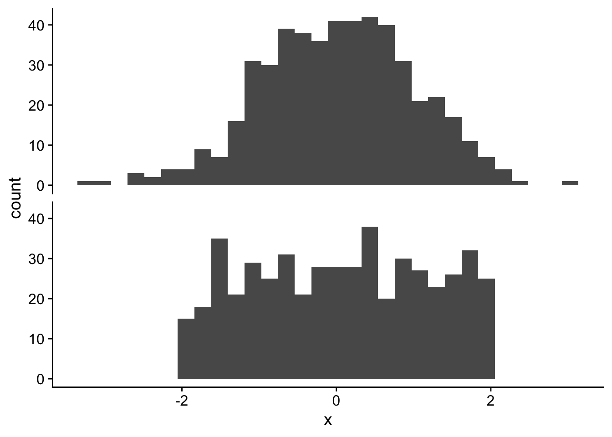
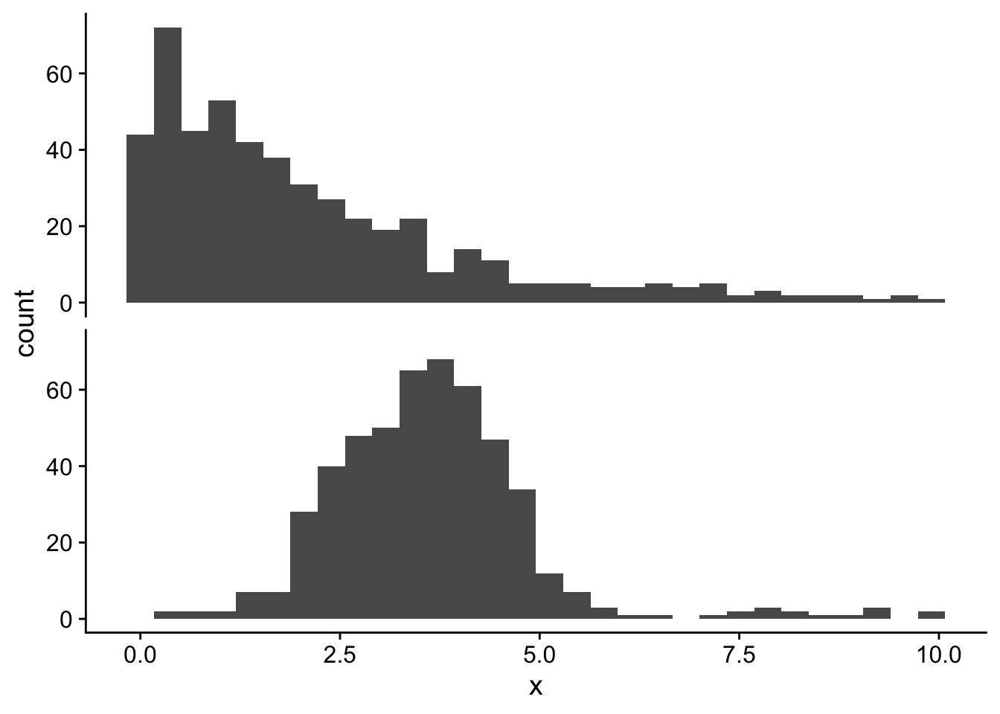
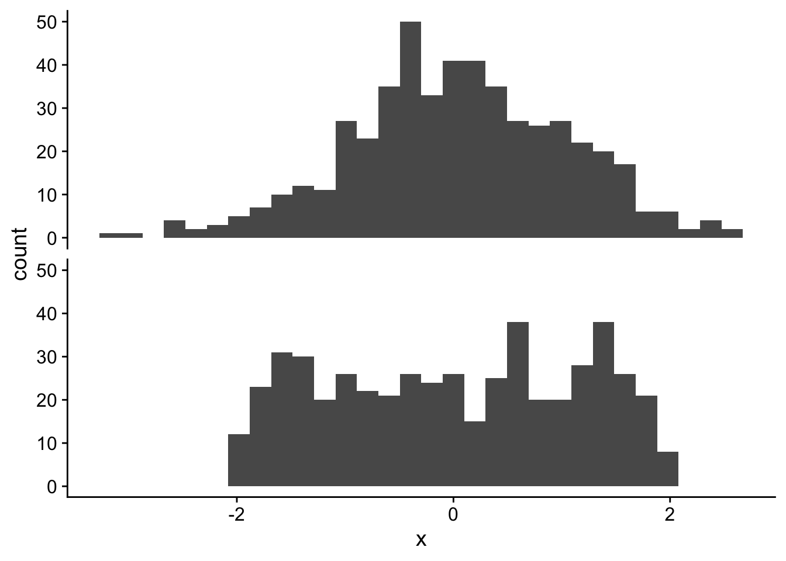
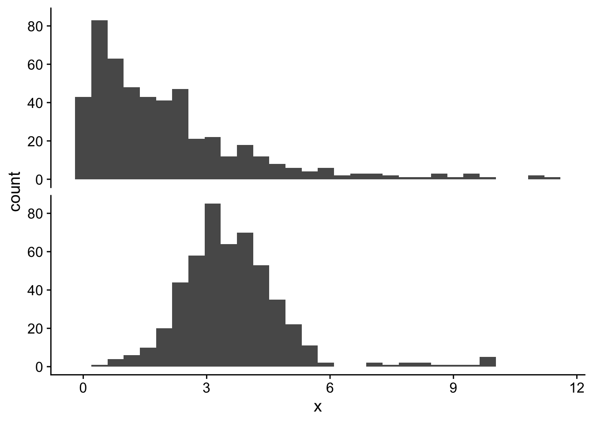

6 🎉 Review 🎉 describing data, standard error, confidence intervals
6.1 Goals
Build more confidence with:
- Calculating descriptions of the location and spread of data
- Calculate standard error of the mean
- Calculate confidence intervals
6.2 Learning the Tools
6.2.1 Describing the location of data
For location we use either the mean or the median. The mean is ideal for data that are symmetrically distributed, the median is more ideal for skewed data or data with outliers because it will be less sensitive to extreme values.
Here are some examples of simulated datasets with different distributions, organized by which description of location (mean or median) would work best:
Use the mean
Use the median

Try calculating the mean and median for the following vectors:
3.68, 3.51, 4.78, 5.90, 6.67, 6.51, 2.31, 5.72, 5.84, 3.61, 4.78, 4.73, 4.02, 5.28, 5.66, 5.77, 6.86, 5.62, 6.86, 5.86
Here’s how we could do that in R
# copy the numbers in and assign them to an object
y1 <- c(3.68, 3.51, 4.78, 5.90, 6.67, 6.51, 2.31,
5.72, 5.84, 3.61, 4.78, 4.73, 4.02, 5.28,
5.66, 5.77, 6.86, 5.62, 6.86, 5.86)
mean(y1)[1] 5.1985median(y1)[1] 5.64The mean and median are relatively close to each other
Now let’s try the mean and median for these numbers:
0.42, 3.46, 0.82, 1.36, 1.34, 1.61, 1.18, 0.73, 0.63, 1.40, 1.54, 1.64, 0.87, 6.65, 0.28, 7.05, 6.67, 2.45, 4.06, 5.68
Again in R:
Here’s how we could do that in R
# copy the numbers in and assign them to an object
y2 <- c(0.42, 3.46, 0.82, 1.36, 1.34, 1.61, 1.18,
0.73, 0.63, 1.40, 1.54, 1.64, 0.87, 6.65,
0.28, 7.05, 6.67, 2.45, 4.06, 5.68)
y2 <- round(rexp(20, 0.5), 2)
mean(y2)[1] 1.2735median(y2)[1] 1.135The values are more distant. Let’s figure out why by making a histogram to look at the shape of the distribution of these data:
# first make a data.frame out of each of y1 and y2
y1df <- data.frame(group = "y1", y = y1)
y2df <- data.frame(group = "y2", y = y2)
# now combine the two data.frames so we can plot
all_y_df <- rbind(y1df, y2df)
ggplot(all_y_df, aes(x = y)) +
geom_histogram() +
facet_grid(rows = vars(group))
For y1 the data are more symmetric, so the mean and median are closer to the same value. For y2 the data are not symmetric at all, so the mean and median are more different. In the case of y2, the outliers are to the right, so the mean gets pulled to the right and is bigger than the median. In the case of y1, even though the data are closer to symmetric, there is still some outlier-ish points to the left so the mean gets pulled to the left and is smaller than the median
Remember that the median is the middle value of the data. We can calculate this by hand like this:
# median by hand for y1
# first we need to sort y1 from smallest to biggest
y1 <- sort(y1)
# the length of y1 is 20, which is even, so the median is the average
# of the middle two values
# these are the middle two values
y1[c(10, 11)][1] 5.62 5.66# here's their average
mean(y1[c(10, 11)])[1] 5.64# confirm we get the same answer
median(y1)[1] 5.646.2.2 Describing the spread of data
We have learned two types of calculations to describe the spread of data: 1. the standard deviation (and variance); and 2. the interquartile range.
Whenever we would use the mean to describe the location, we can also feel confident using the standard deviation to describe the spread. Whenever we would use the median to describe the location, we should use the interquartile range for the spread.
Use the standard deviation

Use the interquartile range

Let’s use our made up y1 and y2 data to calculate all the metrics of spread.
We start with variance and standard deviation, which are appropriate for y1. Let’s look at the equation:
\[ s^2 = \frac{1}{n} \sum_{i = 1}^n (y_i - \bar{y})^2 \]
Now translate that to code:
y1_sumsqdiff <- sum((y1 - mean(y1))^2)
y1_s2 <- 1 / (length(y1) - 1) * y1_sumsqdiff
y1_s2[1] 1.564519# confirm the by-hand calculation with the built-in function
var(y1)[1] 1.564519Now for standard deviation:
\[ s = \sqrt(s^2) \]
And translating that into code:
y1_s <- sqrt(y1_s2)
y1_s[1] 1.250807# confirm with the built-in function
sd(y1)[1] 1.250807Now let’s look at the interquartile range for y2. The goal of the interquartile range is to find the middle region that contains 50% of the data. That means 25% of the data (or one quarter of the data) will be smaller, and 25% of the data will be larger. Here are the steps:
# first we need to sort the data from smallest to largest
y2sorted <- sort(y2)
y2sorted [1] 0.04 0.24 0.55 0.78 0.84 0.87 0.89 0.93 0.98 1.11 1.16 1.20 1.21 1.24 1.43
[16] 1.43 1.52 1.61 3.70 3.74# now we figure out how many data points we're dealing with
length(y2sorted)[1] 20# now we find the "quarters"
length(y2sorted) / 4[1] 5# because this is an even number we need to average the 5th and 6th values
# to find the lower bound of the interquartile region
q1 <- mean(y2sorted[c(5, 6)])
# now we do the same for finding the upper bound
q3 <- mean(y2sorted[c(15, 16)])
# now put them together
iqr <- c(q1, q3)
iqr[1] 0.855 1.430# to calculate a single value describing the spread we can just calcualte
# the difference between those two values
q3 - q1[1] 0.575# or...
diff(iqr)[1] 0.575Notice that I called these values q1 and q3 that is because these are the first and third quartiles. The first quartile has 25% of the data below it, the third quartile has 25% of the data above it. Put another way, the third quartile has 75% of the data below it!
That description can help us use a built-in function to verify our by-hand calculation. We use the quantile function with probs equal to 0.25 and 0.75 (for 1st and 3rd quartiles):
quantile(y2, type = 2, probs = c(0.25, 0.75)) 25% 75%
0.855 1.430 We have to specify type = 2 so that R takes the average of adjacent values when the sample size is even.
Note: if we were trying to compare y1 and y2 we would need to use the SAME metrics, we can’t compare the mean of one to the median of another, or the standard deviation of one to the interquartile range of another. The median and interquartile range work for any data, so in this case we should use the median and interquartile range for both y1 and y2 if we wanted to compare them.
6.2.3 Describing our confidence in estimates
We calculated the mean of y1 before:
y1bar <- mean(y1)
y1bar[1] 5.1985How precise do we think this estiamte is? This is the job for the standrad error and confidence interval.
The standard error is defined as
\[ SE = \frac{s}{\sqrt n} \]
Let’s turn that into code:
y1_se <- y1_s / sqrt(length(y1))
y1_se[1] 0.279689The 95% confidence interval is very close to the mean \(\pm 2 \times SE\). We can calculate that with code as well:
y1_ci95 <- c(y1bar - 2 * y1_se, y1bar + 2 * y1_se)
y1_ci95[1] 4.639122 5.757878In biology, the 95% confidence interval is most commonly used. In other fields different percentages (such as 90% or 99%) are also used.
The interpretation of the 95% confidence interval is that 95% of the middle of the sampling distribution is contained within the upper and lower bounds of the 95% confidence interval. Have a look at the interactive website from our book for more explanation: https://www.zoology.ubc.ca/~whitlock/Kingfisher/CIMean.htm
6.3 Questions
- Fix the snippet of a script below:
# calculate the mean and median of flipper length of
# chinstrap penguins by hand
library(palmerpenguins)
chinstrap <- subset(penguins,
!is.na(penguins$species) &
!is.na(penguins$flipper_length_mm))
# the data we'll use
y <- chinstrap$flipper_length_mm
# number of observations
n <- nrow(y)
# sum of values
ysum <- sum(y)
# mean
ybar <- mean(ysum)
# median, n = 68 so middle value is at the index 34
ysorted <- sort(y)
ymedian <- ysorted[34]
# compare
ybar
ymedian- Make a graph (which kind of graph should you use??) to help evaluate whether you should use the mean or median to describe the location of the chinstrap penguin flipper length data. Pick which metric you should use (mean or median) and justify your choice using both the ouput of the corrected code from (1.) and from the graph of the data
- Write the code to calculate (by hand) the variance and standard deviation of the chinstrap flipper length data. Use
varandsdto check your by-hand calculations
- Make a boxplot of the chinstrap flipper length data. Then calculate the values of the first and third quartiles. Can you locate the first and third quartiles on the boxplot?
- Calculate the standard error of the mean of chinstrap flipper length. From the SE, calculate the 95% confidence interval of the mean using the
2 * SErule
- Suppose that instead of the 500 data points we have for chinstraps we actually had 250 data points. Write some code to calculate how we might expect the SE and 95% CI to change. Hint: in this thought experiment, what value in the calculation of SE can you assume stays approximately constant, what value must change? Now do the same kind of calculation, but for the hypothetical case where we have twice as much data (so n = 1000). How do the smaller and larger sample size data sets compare the data we actually have?